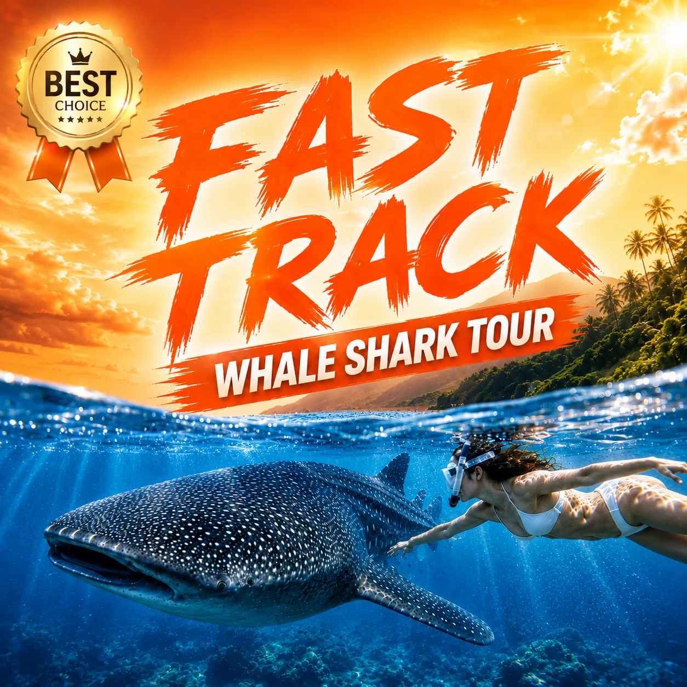

보라카이 고래상어 셀프 투어 가이드
투어 없이 보라카이 고래상어 셀프로 다녀오고 싶은 분을 위한 정리입니다. 입장권 가격, 운영시간, 가는 순서, 준비물, 셀프와 투어 중 무엇이 나은지까지 한 페이지에 담았습니다.

- · 셀프 = 입장권만 구매 + 이동·장비는 직접
- · 입장권: 외국인 ₱1,920 / 필리핀인 ₱1,620 (1인)
- · 운영시간: 08:00 ~ 18:00
- · 입장 방법: 이메일로 받은 QR 코드 제시
- · 장소: 보라카이 건너편 안티케주 리베르타드
보라카이 고래상어, 셀프로 갈 수 있나요?
네, 갈 수 있습니다. 고래상어 관람지는 보라카이 섬이 아니라 건너편 파나이 섬의 리베르타드(Libertad, Antique)에 있습니다. 입장권을 미리 사 두고, 리베르타드까지 이동과 장비만 직접 준비하면 셀프로 다녀올 수 있습니다.
입장권에는 공식 고래상어 관람 입장만 포함됩니다. 이동, 가이드, 장비, 사진 촬영, 숙소 픽업·드롭은 포함되지 않습니다.
셀프로 가는 순서
- 입장권 온라인 구매날짜와 인원을 고르고 결제하면 QR 입장권이 바로 이메일로 옵니다.
- 리베르타드까지 이동보라카이에서 배로 본섬(카티클란)으로 건넌 뒤 차량으로 리베르타드까지 이동합니다. 차량 이동은 약 1시간 정도 잡으면 됩니다.
- 현장에서 QR 제시운영시간(08:00~18:00) 안에 도착해 QR 코드를 보여주고 입장합니다.
- 브리핑 후 관람안전 브리핑을 듣고 안내에 따라 입수합니다. 관람은 보통 30분 안팎입니다.
* 오전에 가는 것을 추천합니다. 저희 투어도 07:30에 출발해 10시 전후로 관람합니다.
셀프 vs 투어 비교
| 셀프 (입장권) | 레귤러 | 패스트트랙 | |
|---|---|---|---|
| 외국인 1인 | ₱1,920 | ₱2,820 | ₱3,600 |
| 입장료·관람료·환경세 | ✓ | ✓ | ✓ |
| 왕복 차량 | ✕ | ✓ | ✓ |
| 구명조끼·오리발 | ✕ | ✓ | ✓ |
| 현지 스태프 | ✕ | ✓ | ✓ |
| 수중 촬영 | ✕ | ✕ | ✓ |
| 대기 최소화 | ✕ | ✕ | ✓ |
* 필리핀인 요금: 입장권 ₱1,620 · 레귤러 ₱2,520 · 패스트트랙 ₱3,300
입장권(₱1,920)에 이동과 장비를 따로 구하는 비용·시간을 더하면, 차량과 장비가 포함된 레귤러(₱2,820)와 차이가 크지 않을 수 있습니다. 일정과 예산에 맞게 고르세요.
셀프가 맞는 분
- 이동과 일정을 직접 짜는 게 편한 분
- 스노클·오리발 등 개인 장비가 있는 분
- 입장만 하면 되는, 가장 저렴한 방법을 찾는 분
- 현장에 가 본 적이 있는 재방문객
투어가 나은 분
- 처음 가서 이동 방법이 막막한 분
- 아이·부모님과 함께라 이동이 편해야 하는 분
- 고래상어와 함께 찍은 수중 사진·영상을 남기고 싶은 분
셀프 준비물
- 수영복·래시가드, 수건, 갈아입을 옷
- 스노클 마스크·오리발 (입장권에는 장비 미포함)
- 방수팩 또는 액션캠
- 리프 세이프 선크림 — 입수 직전에는 바르지 않는 것이 좋습니다
- QR 입장권 (휴대폰 화면 또는 캡처)
꼭 지켜야 할 관람 규칙
- 고래상어 머리에서 5m, 몸통·꼬리에서 6m 이상 거리 두기
- 구명조끼와 장비를 항상 바르게 착용
- 안내가 있을 때만 천천히, 조용히 입수·출수
- 만지거나 길을 막지 말고 자연스럽게 헤엄치도록 두기
- 가이드·보트 크루·현지 당국의 안내를 따르기
* 고래상어는 야생 동물이라 관측이 100% 보장되지는 않습니다.
자주 묻는 질문
보라카이 고래상어 셀프로 갈 수 있나요?
네. 입장권만 미리 사고 리베르타드까지 이동은 직접 하면 됩니다. 현장에서 이메일로 받은 QR만 보여주면 입장합니다.
입장권 가격은 얼마인가요?
1인 기준 외국인 ₱1,920, 필리핀인 ₱1,620입니다. 이동·가이드·장비·촬영은 포함되지 않습니다.
운영시간은 언제인가요?
오전 8시부터 오후 6시까지 입장할 수 있습니다. 오전 방문을 추천합니다.
셀프로 가면 장비는 어떻게 하나요?
입장권에는 장비가 포함되지 않습니다. 개인 장비를 챙기거나, 장비와 왕복 차량이 포함된 레귤러 투어를 고르면 됩니다.
입장권을 잃어버리면요?
분실한 입장권은 재발급이나 환불이 어려울 수 있으니 QR을 캡처해 두세요.